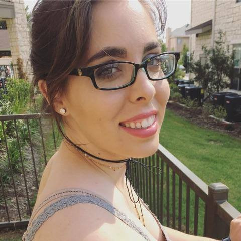

About Me
An Unsure Past
When I was very young, my answer to “what do you want to be when you grow
up?” was always “anything but an astronaut.” I had no idea what I wanted to be
but don’t you dare fly me into space. What I did know was that I’ve loved
drawing ever since I can remember, I lived for dissection day, and I had trouble
putting the N64 controller down - but of course 5 year old me never imagined
there was a career that could combine art, science, and video games.
Since I showed interest in biological science, my parents convinced me that I
should become a doctor. During my undergraduate career I discovered that
while I loved learning about specific facets of biology, I was not interested in
pursuing medicine AT ALL. When I wasn't studying, I was drawing. My inner
artist was fighting for attention, and this desire to become an animator, which I
had been suppressing, kept resurfacing. The rigors of my studies and my
conflicting interests left me mentally and emotionally exhausted. In order to hit
the reset button and have some fun while I figure things out, I took a little
detour to Disney World.
The Road to Discovery
My time working in the theme park industry was quite the adventure, from educating guests about animals and conservation, to training and leading other cast members (and even a short stint as a zookeeper). I got my first glimpse into human (and animal) psychology which scratched that fascination itch, but I wasn’t quite fulfilled yet. And since Disney loves to remind people to follow their dreams, so I was inspired to take some art classes to see if I had what it takes. Those classes taught me that my traditional drawing skills were definitely above average. Unfortunately I was not interested in the 3D modeling/rendering world that animation had become and was naive about other potential creative careers where I could use my talent. I now felt stuck. I wanted to pursue a role that I would be passionate about and that would enable me to help others. My head and my heart kept fighting between science and art. In which realm would I find this elusive, fulfilling role?
I See the Light
Finally, one fateful day I learned that I don’t have to choose between science and art. A couple of people at a party told me about their jobs as UX/UI Designers for game studios. It sounded amazing, and after reading The Design of Everyday Things I knew this was it. I could pursue my love of learning how things work via creative outlets, allowing me to tap into my inquisitive nature by discovering what gamers' needs are and making their lives easier.